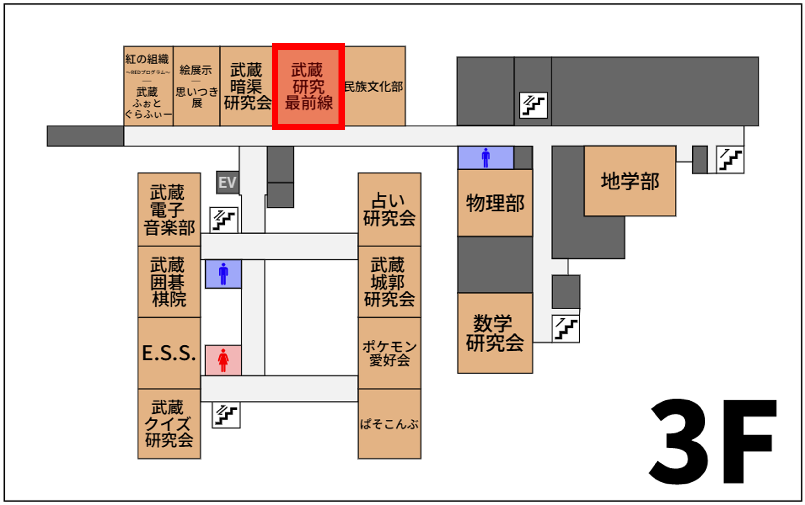

第104回記念祭 新企画
武蔵研究最前線
武蔵の研究を6分34秒で、楽しくわかりやすく！
新たな研究発表企画です
2026年4月25日（土）・26日（日）開催
武蔵高等学校中学校 第104回記念祭 企画
開催場所: 西棟3階 演習室3-2
会場マップを表示

Aim
企画のねらい
「研究」と聞いてどんな印象を持つでしょうか。「難しそう」「つまらなそう」そんな言葉を耳にします。そんなことはありません！研究の原点はいつでも日常のなかのちょっとした疑問や気づきにあります。その過程はワクワクするものです。
しかし、その面白さはしばしば専門的な言葉や難しい説明に隠れてしまい、なかなか伝わりません。
そこで本企画「武蔵研究最前線」では、武蔵生が日々取り組んでいる研究を、「楽しく」「わかりやすく」伝えることを目指します。発表時間は6分34秒。短い時間の中で、研究の面白さの“核心”だけを切り取り、誰でも直感的に楽しめる形でお届けします。
この企画を通して、「研究」の印象が「おもしろいかも」「もっと知りたい」へと変化すれば幸いです。そして、是非研究の世界への一歩を踏み出してみてください。
Origin
企画の由来
武蔵の某理科棟部活に所属したのち、暗渠研を立ち上げた発起人が、東京大学の学園祭で行われている「東大研究最前線」にインスピレーションを得て立ち上げた企画です。
2025年4月の第103回記念祭には団体として参加しました。第104回記念祭からは、企画パートの管轄となり、武蔵の研究文化を伝える企画としての継続を目指しています。
Schedule
発表タイムテーブル
読み込み中...
データを読み込んでいます...
Contact
お問い合わせフォーム
発表内容についての後日の質問やご感想は、Googleフォームからお送りください。
Links